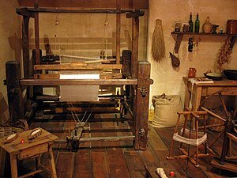
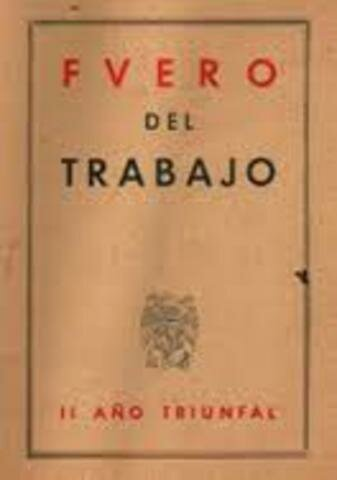

Evolución del Derecho Laboral y Movimiento Obrero en España
1830
Inicio del Movimiento Obrero en España
El movimiento obrero en España se inició en Cataluña en las décadas de 1830 y 1840, aunque fue en el Sexenio Democrático cuando nace realmente con la fundación en el Congreso Obrero de Barcelona de 1870 de la Federación Regional Española de la Primera Internacional.
1834
Primer acuerdo entre industriales y jóvenes obreros
Legalización de las primeras asociaciones obreras. Es el más lejano precedente del sindicalismo en España acordado el 2 de julio de 1834.
1840
Sociedad Mutua de Tejedores de Barcelona

El 17 de marzo de 1840, el tejedor Juan Munts inspiró la fundación de la Asociación mutua de obreros de la industria algodonera. Esta asociación representó uno de los primeros intentos de organización obrera formal.
1855
Primera huelga general en España
La huelga general en España de 1855 se considera la primera huelga general convocada en la historia de España, bajo el lema '¡Asociación o Muerte!'. Tuvo lugar principalmente en Cataluña, durante el reinado de Isabel II, con el gobierno de Baldomero Espartero en el Bienio Progresista.
1870
Fundación de la Federación Regional Española de la Primera Internacional
Durante el Congreso Obrero de Barcelona se fundó la Federación Regional Española de la Primera Internacional, marcando el nacimiento formal del movimiento obrero organizado en España.
1879
Fundación del PSOE en Madrid
Fundado clandestinamente en Madrid, el 2 de mayo de 1879, por un grupo de intelectuales encabezados por Pablo Iglesias Posse. El PSOE fue fundado como forma de expresar los afanes e intereses de los trabajadores nacidos de la revolución industrial.
1888
Fundación de la UGT
La UGT (Unión General de Trabajadores) fue fundada por un grupo de treinta y dos delegados, representantes de cuarenta y cuatro sociedades de oficios, el 12 de agosto de 1888 en Barcelona. Defendía la fijación de salarios mínimos y la jornada de ocho horas, con una vocación internacionalista desde sus inicios.
1900
Ley de accidente de trabajo ('Ley Dato')
Primera disposición en España que regulaba el accidente de trabajo, creando el Seguro obligatorio. También se aprobó la Ley de condiciones de trabajo de las mujeres y niños, que prohibía el trabajo a menores de 10 años.
1910
Creación de la CNT en Barcelona
La Confederación Nacional del Trabajo (CNT) fue creada como fruto del sindicalismo obrero por encontrar una coordinación necesaria para la clase obrera en su lucha contra el capitalismo, basada en las tesis anarquistas.
1919
Jornada laboral de 8 horas
El 3 de abril de 1919, tras una intensa huelga de 44 días, el gobierno español firmó un decreto que fijaba la jornada laboral máxima de ocho horas diarias. España se convirtió en el primer país del continente europeo en adoptar esta medida por ley.
1920
Creación del Ministerio del Trabajo

El Ministerio de Trabajo agrupó bajo su dirección a todos los organismos con competencias sociales creados en años anteriores, pero con un rango administrativo de mayor capacidad, para afrontar la difícil situación laboral del momento.
1931
Constitucionalización del derecho del trabajo (Segunda República)
La Constitución de 1931, calificada de 'liberal, demócrata con apertura a los derechos sociales', comenzaba definiendo a España como 'una república democrática de trabajadores de toda clase', afirmando el carácter de 'obligación social' del trabajo.
1938
Fuero del trabajo (Franquismo)

Una de las ocho Leyes Fundamentales del franquismo, elaborada antes del fin de la Guerra Civil. Regulaba la jornada laboral y el descanso, y creó la Magistratura del Trabajo y los sindicatos verticales que agrupaban por igual a patronos y obreros.
1958
Ley de Convenios Colectivos
Nuevo mecanismo de negociación mediante el cual empresarios y trabajadores llegaban a acuerdos sobre condiciones de trabajo. Fomentaba la justicia social, mejora del nivel de vida y elevación de la productividad.
1978
Constitución Española
El artículo 35.1 establece el derecho al trabajo, a la libre elección de profesión, a la promoción laboral y a una remuneración suficiente, sin discriminación por sexo. La Constitución recoge ampliamente contenidos relacionados con derechos laborales.
1980
Estatuto de los Trabajadores
Aprobado el 10 de marzo de 1980, representó una adaptación del derecho laboral a la nueva situación democrática del país. Estableció una nueva regulación de la relación laboral entre empleadores y empleados.
1985
Ley de libertad sindical
La Ley 11/1985 de 2 de agosto establece que todos los trabajadores tienen derecho a sindicarse libremente para la promoción y defensa de sus intereses económicos y sociales, representando un avance significativo tras la dictadura.